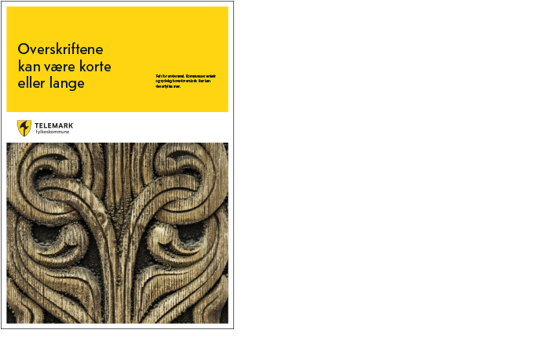
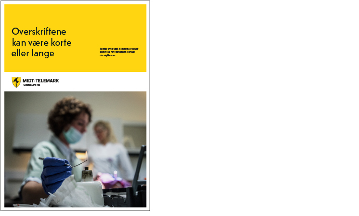
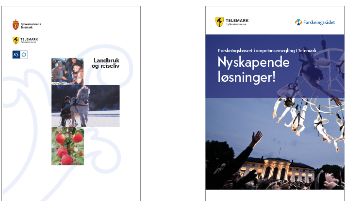

Visuell strategi – eksempler
Frihetsgrad 0
100 prosent Telemark fylkeskommunes profil, basert på regler i denne profilmanualen.
T’en kan benyttes.
Eksempelet under viser hovedlogo i profil-layout:

Frihetsgrad 1
100 % Telemark fylkeskommunes profil, basert på regler i denne profilmanualen.
Hovedlogoen erstattes med virksomhetslogo. Dette gjelder kjerneoppgaver og ansvarsområder som Telemark fylkeskommune eier alene, faglig og økonomisk, og som har et definert behov for profilering sett i sammenheng med fylkeskommunen.
Eksempelet under viser virksomhetslogo i profil-layout:

Frihetsgrad 2
For mindre samarbeidspartnere og begrenset tredjepartsdeltakelse gis tillatelse til bruk av frihetsgrad 2. Dette innebærer at samarbeidspartneren er hovedprofilbærer med egen logo og egen visuell profil, og fylkeskommunens logo alene benyttes som garantist i tråd med spesifiserte retningslinjer. Dersom fylkeskommunen er en av flere samarbeidspartnere i et prosjekt, vil fylkeskommunens logo sidestilles med de andre aktørene i samarbeidet.
Følg generelle retningslinjer for bruk av logo. Ikke sett den på forstyrrende bakgrunner og husk kravet til avstand rundt logo.
T’en kan kun benyttes hvis profilen er spesifikt tilpasset dette. Unngå for mange avsendere.
Eksempelet under viser to forsider som har en annen identitet der Telemark fylkeskommunes logo underordner seg profilen:
